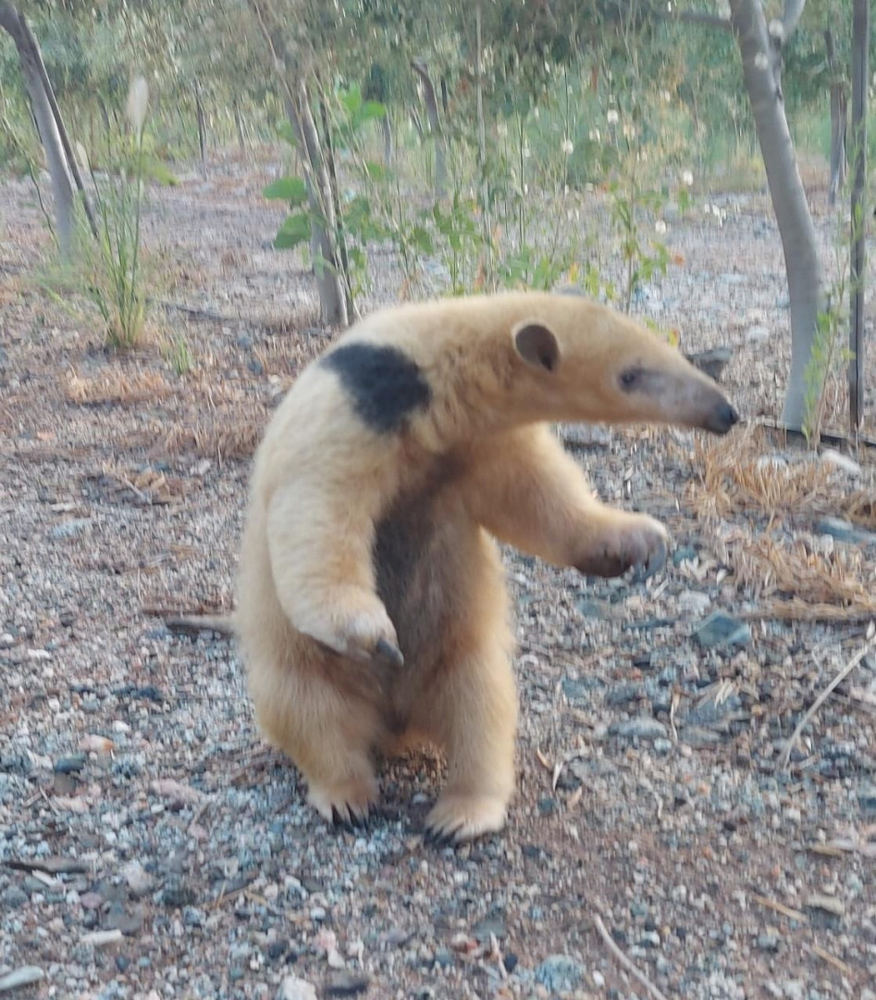

El Oso Melero
El oso melero, también conocido como Tamandua, es un mamífero
insectívoro que vive en América Central y del Sur.
Tiene un pelaje áspero y largo, y se alimenta principalmente de
hormigas y termitas. Es reconocible por su hocico alargado y su
habilidad para trepar árboles en busca de alimento. Estos animales
desempeñan un papel importante en el equilibrio de los ecosistemas
donde viven.
enlaces a mas informacion


datos curiosos sobre el oso meloro
Lengua pegajosa: El oso melero tiene una lengua larga y pegajosa que puede extender hasta 40 centímetros de longitud. Esta característica le permite alcanzar insectos en los lugares más difíciles, como dentro de los nidos de termitas y hormigas.
Patas adaptadas: Sus patas delanteras están adaptadas con garras largas y fuertes que le ayudan a abrir los nidos de insectos y a excavar en la tierra en busca de alimento.
Pelaje distintivo: La mayoría de las especies de osos meleros tienen un pelaje áspero y de coloración variable, que puede ser gris, marrón o negro. A menudo tienen una banda de color blanco o amarillo que cruza su torso, lo que les da una apariencia única y distintiva.
Hábitos solitarios: Los osos meleros son generalmente animales solitarios y nocturnos, pasando la mayor parte de su tiempo en busca de alimento durante la noche y descansando durante el día en madrigueras que construyen en árboles o en el suelo.
Comunicación química: Utilizan glándulas odoríferas ubicadas en la base de la cola para marcar su territorio y comunicarse con otros osos meleros a través de señales químicas.
Escaladores expertos: Son excelentes escaladores y pueden trepar hábilmente entre las ramas de los árboles en busca de alimento y refugio. Sus garras largas y curvas les proporcionan un excelente agarre en las superficies ásperas.
Depredadores y amenazas: Los principales depredadores del oso melero son grandes felinos como jaguares y pumas. Además de la depredación, enfrentan amenazas como la pérdida de hábitat debido a la deforestación y la caza furtiva para el comercio de mascotas y la medicina tradicional.